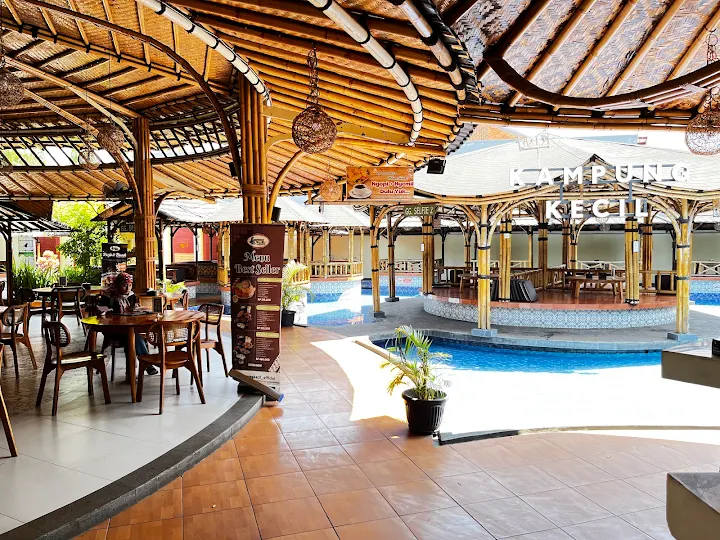

Dibangun dari bambu,
ditemani suasana hangat.


Kampung Kecil dibangun sebagai tempat mampir buat siapa saja yang kangen suasana kampung — gazebo bambu, kolam kecil di tengah, dan lampu-lampu hangat yang menyala begitu matahari turun. Nggak perlu dandan rapi, cukup datang, duduk, dan biarkan waktu jalan pelan.
santai aja…